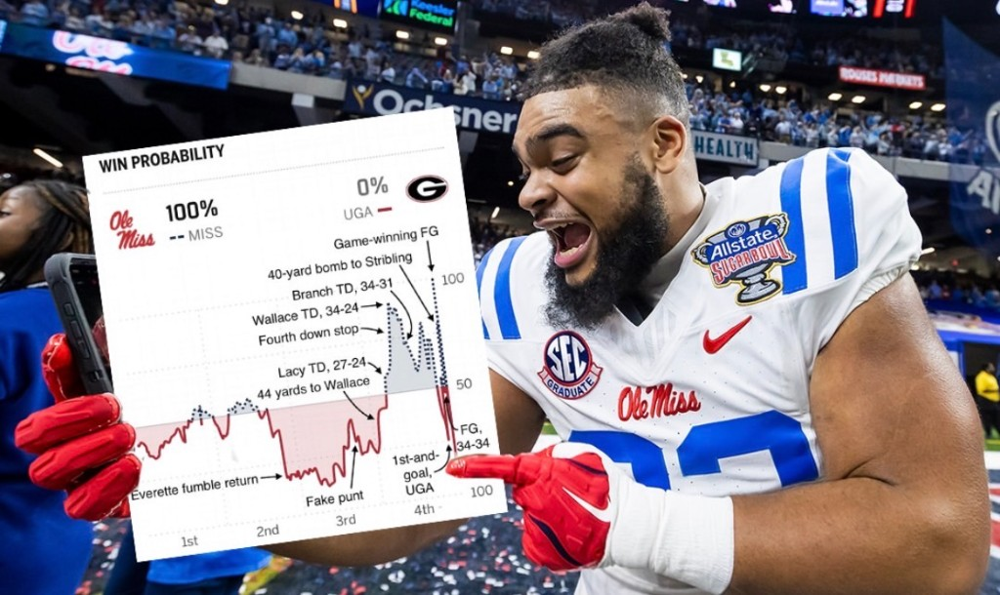
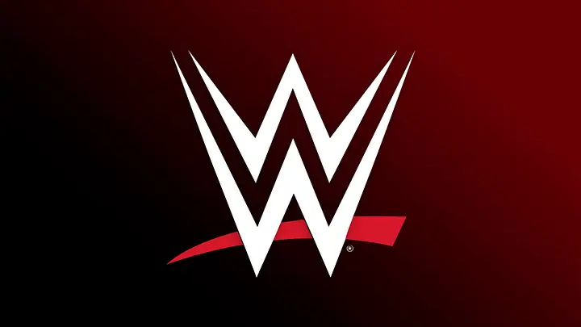
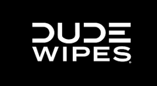
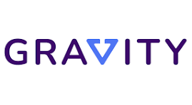
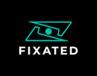

Defensive Tackle // Ole Miss
Jon Seaton
Relatable. Funny. Real.
That's lineman life.
A college football creator with a one-of-one voice, translating locker room humor, coach interactions, and everyday lineman life into sponsor-ready sports entertainment.

92
“
I make football funny. Lineman life is a different breed.
POV Sports Media
College football content brands can actually use.
Jon owns a unique lane: comedic lineman storytelling that makes football culture accessible, repeatable, and highly shareable.
About Jon
Real life. Real laughs. Real impact.
Jon Seaton is a defensive tackle for Ole Miss from Hillsborough, New Jersey. His content turns the moments fans rarely see into relatable entertainment: coach interactions, practice humor, teammate culture, and the everyday POV of a college football lineman.
With massive reach across Instagram and TikTok, Jon gives partners a creator who can make branded moments feel native to sports fans, students, and culture-driven audiences.
Social Media Impact
Built-in audience. Proven conversion energy.
Followers on @sea76n
Followers on @jonseaton
Total likes from football, humor, and culture content
Earned while building reach at a non-Power-5 school
Past Brand Partners
Trusted by national and creator-first brands.




Brand Interests
Campaign lanes that fit Jon's audience.
Let's Work Together
Book Jon for your next campaign.
Partner with a creator who can make sponsor messages feel like part of the culture. Jon is open to social posts, POV integrations, launch campaigns, event activations, and ongoing ambassador partnerships.